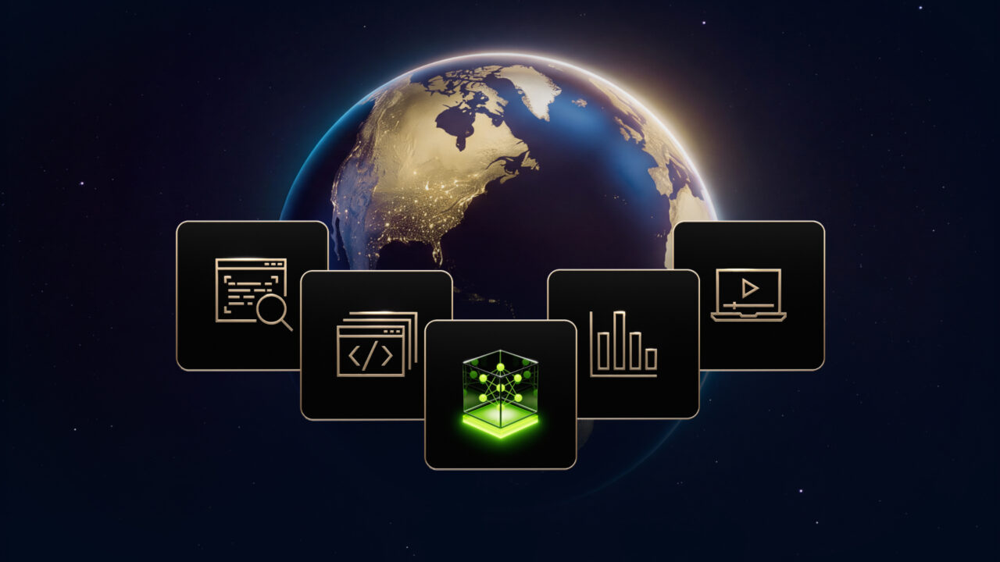

Executive Summary
이 글은 엔비디아가 모델 파일과 함께 공개한 학습 데이터가 어디서 왔는지를 본다. 10월 15일 발표한 Nemotron 3.5 Super VL은 누구나 받아 쓸 수 있는 개방 모델이고, 같은 자리에서 학습에 쓴 데이터 열한 벌도 함께 풀렸다. 가중치만 열고 데이터는 닫아 두는 쪽이 업계 관행이라, 데이터까지 연 것 자체는 반가운 일이다.
열한 벌 가운데 가장 큰 385만 582건짜리 데이터를 열어 보면, 그 안의 답변을 쓴 것은 엔비디아의 모델이 아니라 문샷AI와 구글과 알리바바의 모델이다. 데이터셋 카드에 적힌 라이선스는 OpenMDW-1.1 한 줄인데, 그 한 줄 뒤에는 서로 다른 약관 셋이 겹쳐 있다. 셋을 다 열어 본 결과 이 데이터로 학습시킨 모델에 따라붙는 조건은 없었다. 다만 그 답이 약관 본문에는 적혀 있지 않아, 한 곳은 저장소 토론 글까지 들어가야 나왔다.
4절까지는 데이터셋 카드와 기술 보고서, 공개된 라이선스 문서와 저장소 토론 글에 적힌 사실을 따라간다. 받아 쓰는 쪽이 데이터의 계보를 어디까지 되짚어야 하는지를 묻는 5절은 이 글의 해석이다.
주요 수치
앞의 둘은 엔비디아가 연 것의 크기이고, 뒤의 둘은 그 안을 열었을 때 나온 숫자다.
출처: 허깅페이스 데이터셋 카드, 엔비디아 기술 보고서(2026년 10월 14일), 공개 저장소 전수 조사(orcarouter.ai, 2026년 10월).
385만 582건
가장 큰 공개 데이터 한 벌
지시따르기와 대화 기록, 압축 전 80.74GB
11벌
가중치와 함께 푼 학습 데이터
10월 12일부터 15일까지 사흘 사이에 올라왔다
0벌
엔비디아 자기 모델로 답을 채운 데이터
어떤 모델로 만들었는지 적힌 5벌은 모두 다른 회사 모델이다
셋 다 없음
이 데이터로 학습한 모델에 따라붙는 조건
그 답이 약관 본문에 적힌 곳은 셋 중 둘뿐이다
가중치 옆에 데이터가 같이 놓였다
Nemotron 3.5 Super VL은 엔비디아가 10월 15일 발표한 개방 모델이다. 전체 파라미터는 1,200억이고 질문 하나를 처리할 때 실제로 도는 것은 그중 120억이다. 전문가를 여럿 두고 필요한 전문가만 깨우는 구조라 그렇다. 글과 이미지를 함께 읽는 모델이고, 같은 날 텍스트 전용인 Nemotron 3.5 Lightning도 함께 나왔다. 가중치 파일은 사흘 앞선 10월 12일에 이미 허깅페이스에 올라와 있었다.

발표에서 엔비디아가 내세운 표현은 가중치와 데이터와 조리법을 함께 연다는 것이었다. 모델 파일만이 아니라 학습 뒤 다듬는 단계에 쓴 데이터와 그 절차까지 묶어 공개한다는 뜻이다. 강화학습 환경인 NeMo Gym도 같이 열었다. 목표도 분명히 적어 뒀다. 기업이 자기 데이터센터에서 자기 데이터로 다시 학습시켜 자기 것으로 소유하게 한다는 것이다. 도입한 곳으로는 스카이댄스, EY, 램프, 크라우드스트라이크, 퍼플렉시티, 세일즈포스를 들었다.
성능에 대해서는 소프트웨어 수정 과제 묶음인 SWE-bench Pro에서 51.78%를 냈고, 한 번에 도는 파라미터가 4.6배쯤 적은데도 윗급인 Nemotron 3 Ultra를 넘어섰다고 밝혔다. 앤트로픽 Opus 5와 오픈AI GPT 6.1 Sol보다 에이전트 작업에서 낫다는 주장도 함께 실렸다. 다만 이 비교는 엔비디아가 스스로 돌린 것이고, 터미널 작업 평가인 Terminal-Bench 2.1에서는 기술 보고서에 적힌 수치와 모델 카드에 적힌 수치가 서로 다른 방향을 가리킨다는 지적도 나와 있다.
이 글이 보려는 것은 성능 쪽이 아니다. 가중치만 열고 데이터는 닫아 두는 것이 지금의 관행이라, 데이터까지 열면 바깥에서 그 안을 읽을 수 있게 된다. 읽을 수 있게 되자 보이기 시작한 것이 있다.
385만 건 안을 펴 보면
열한 벌 가운데 가장 큰 것은 Nemotron-SFT-Instruction-Following-Chat-v4다. 3,850,582건이 들어 있고 용량은 80.74GB다. 안은 세 갈래로 나뉜다. 답변 길이를 지시대로 맞추는 연습이 266,190건, 일반 대화가 914,716건, 여러 번 주고받으며 지시를 따르는 기록이 2,669,676건이다. 모델이 사람 말을 고분고분 듣게 만드는 데 쓰는 재료다.
이런 데이터를 만드는 방법은 단순하다. 이미 잘하는 모델에게 질문을 던져 답을 받아 두고, 그 문답 묶음을 새 모델의 교재로 쓴다. 답을 내준 쪽을 업계에서는 선생 모델이라고 부른다. 사람이 일일이 쓰는 것보다 싸고 빠르며, 요즘은 여기까지가 특별한 이야기도 아니다.
특별한 것은 데이터셋 카드에 그 선생이 누구인지 적혀 있다는 점이다. 셋이다. 문샷AI의 Kimi-K2.6, 구글의 Gemma4-E4B-it, 알리바바의 Qwen3.5-397B-A17B. 엔비디아 자신의 Nemotron은 그 자리에 없다. 여기에 사람이 실제로 챗봇과 나눈 대화를 앨런 AI 연구소가 모아 공개한 WildChat-1M과, 어느 모델의 답이 더 나은지 사람들이 고른 LMArena 선호 기록이 섞였다. 앞의 것은 ODC-By 1.0, 뒤의 것은 CC-BY-4.0으로 공개된 자료다. 둘 다 가져다 쓰는 것을 막지는 않되 출처를 밝히라고 요구하는 쪽이라, 여기서 이미 지켜야 할 조건이 둘 생긴다.
그런데 데이터셋 카드 맨 위에 걸린 라이선스는 OpenMDW-1.1 한 줄이다. 카드에는 이용자가 데이터 내용을 직접 확인하고 적용되는 라이선스를 검토해 적합한지 판단해야 한다는 문구도 함께 적혀 있다. 안에 섞인 것이 한 가지가 아니라는 사실을 엔비디아도 알고 있고 고지도 해 둔 셈이다. 다만 무엇이 섞여서 어떤 조건이 따라오는지는 그 문구가 말해 주지 않는다.
섞인 것들이 각각 어느 자리에서 들어왔는지를 펴 보면 아래 도식과 같다. 왼쪽으로 갈수록 먼저 있던 재료이고, 오른쪽 끝은 이 데이터를 받아 학습시킬 모델이다. 자리마다 붙은 라이선스가 서로 다르고, 데이터셋 카드가 보여 주는 것은 그중 한 자리뿐이다.
열한 벌 어디에도 자기 모델 이름은 없다
한 벌만 보면 우연일 수 있다. 분석 블로그 오르카라우터가 10월 12일부터 15일 사이 엔비디아 계정에 새로 올라온 저장소 열한 개를 전수로 훑었다. 그중 어떤 모델로 답을 채웠는지 이름을 적어 둔 것은 다섯 벌이고, 다섯 벌 모두 엔비디아 밖의 모델이다. 엔비디아 자신의 Nemotron이 선생으로 쓰인 데이터는 한 벌도 없다.
남은 여섯 벌 가운데 한 벌은 모델을 쓰지 않고 규칙으로 만들었다고 밝혀 뒀고, 다섯 벌은 아무 표기가 없다. 표기가 없다는 것은 외부 모델을 안 썼다는 뜻이 아니라 알 수 없다는 뜻이다. 계보를 되짚으려는 쪽에서는 이름이 적힌 자리보다 이쪽이 곤란하다. 아래 표는 이름이 적힌 다섯 벌을 건수 순으로 세우고, 나머지를 마지막 줄에 묶은 것이다.
| 데이터 | 건수 | 쓰임 | 답을 써 준 모델 |
|---|---|---|---|
| Instruction-Following-Chat-v4 | 3,850,582 | 대화와 지시따르기 | Kimi-K2.6, Gemma4-E4B-it, Qwen3.5-397B-A17B |
| Agentic-v4 | 634,664 | 도구 호출 | Qwen3.5-397B-A17B, GLM-5.2 |
| RL-Finance-Tool-Calling-v1 | 90,307 | 금융 도구 호출 강화학습 | Qwen3.5-397B-A17B, DeepSeek-V4-Pro |
| Finance-Document-Grounded-Reasoning-v1 | 63,056 | 공시 문서 기반 추론 | Qwen3.5-397B-A17B, DeepSeek-V4-Pro |
| Long-Context-Translation-PG19-v1 | 4,335 | 긴 글 번역 | DeepSeek V4 Flash |
| 나머지 여섯 벌 | 6,000 ~ 100,000 | 화학 추론, 공정성, 긴 문맥 변환 등 | 다섯 벌은 표기 없음. 한 벌은 모델을 쓰지 않고 규칙으로 만들었다고 적었다 |
▲ 2026년 10월 12일부터 15일까지 엔비디아 계정에 올라온 사후학습 저장소 열한 개 전수. 출처: 각 허깅페이스 데이터셋 카드와 오르카라우터 전수 조사(2026년 10월) 재구성
기술 보고서도 같은 이야기를 스스로 적어 뒀다. 대화 데이터를 최근의 Qwen과 Kimi, Gemma 응답으로 갱신했다는 문장이 채팅과 안전 항목에 그대로 있다. 수학 증명 풀이는 DeepSeek V4 Pro로, 경쟁 프로그래밍 문제는 GLM-5.2로 만들었다는 설명도 붙어 있다. 사람의 선호에 맞춰 모델을 다듬는 단계에서는 자기 모델끼리 비교하는 대신 Gemma 4 31B-it을 기준으로 삼았고, 금융 데이터를 거르는 데는 오픈AI가 가중치를 공개한 gpt-oss-120b를 썼다. 한 번 그렇게 된 것이 아니라 방침에 가깝다.
전수 조사에서 함께 걸린 자잘한 것들도 적어 둘 만하다. 금융 데이터 두 벌은 허깅페이스 API가 돌려주는 라이선스 값이 other인데 저장소 안쪽 설명에는 openmdw-1.1이라고 적혀 있다. 라이선스로 걸러서 쓸 데이터를 고르는 도구라면 같은 데이터를 두고 서로 다른 값을 읽게 된다. 표기 방식도 벌마다 고르지 않다. 대개는 OpenMDW-1.1 한 줄인데, 화학 추론 데이터에는 CC-BY-SA-4.0이, 긴 글 번역 데이터에는 Apache 2.0이 함께 걸려 있다. 앞의 것은 받아서 고쳐 내놓을 때 같은 조건을 그대로 붙이라고 요구하는 쪽이라, 같은 날 같은 계정에서 나온 데이터인데도 받아 쓰는 조건이 벌마다 갈린다. 열한 벌 중 토큰 수를 밝힌 것은 한 벌도 없다. 용량과 건수만 있어, 학습에 실제로 얼마나 들어가는 분량인지는 받아서 세어 봐야 안다.
오르카라우터의 표현을 빌리면, 이 데이터로 모델을 다듬는 쪽이 물려받는 기준은 엔비디아의 것이 아니라 답을 써 준 모델들이 가진 말버릇과 판단이다. 어떤 길이로 답하고 어디서 거절하고 무엇을 공손하다고 보는지가 그 모델들에서 온다. 받아 쓰는 입장에서는 엔비디아의 품질 관리만 믿으면 되는 것이 아니라, 그 안에서 실제로 말을 한 모델이 누구인지까지 봐야 한다는 뜻이다.
라이선스 한 줄 뒤에 약관이 셋
OpenMDW-1.1은 리눅스 재단이 2026년 5월 28일에 내놓은 모델 전용 허가형 라이선스다. 엔비디아는 코스모스와 아이작 그루트, 아이징, 네모트론 계열에 이것을 붙였다. 다만 이 문서가 허락하는 범위는 엔비디아가 자기 몫으로 한 일, 그러니까 데이터를 묶고 배포하는 쪽이다. 안에 들어간 재료를 내준 쪽의 약관을 무효로 만들거나 대신하는 문서가 아니다.
그래서 385만 건짜리 데이터의 조건을 알려면 답을 써 준 모델 셋의 약관을 각각 열어 봐야 한다. 열어 보면 셋이 같은 문서를 쓰지 않는다.
| 답을 써 준 모델 | 만든 곳 | 라이선스 | 그 출력으로 모델을 학습시키면 |
|---|---|---|---|
| Qwen3.5-397B-A17B | 알리바바 | Apache 2.0 | 따라붙는 조건 없음 |
| Gemma4-E4B-it | 구글 | Apache 2.0 | 따라붙는 조건 없음. 다만 Gemma 2·3 세대의 옛 약관은 달랐다 |
| Kimi-K2.6 | 문샷AI | 수정 MIT | 따라붙는 조건 없음. 단, 그 답은 약관 본문이 아니라 문샷AI의 공식 답변에 있다 |
셋 중 혼자 다른 문서를 쓴 쪽은 문샷AI다. 수정 MIT라 불리는 이 약관에는 MIT 원문에 없는 조항이 하나 붙어 있다. 월간 활성 이용자가 1억 명을 넘거나 월 매출이 2천만 달러를 넘는 제품에 쓸 경우, 화면에 Kimi K2.6이라는 이름을 눈에 띄게 표시하라는 것이다. 여기까지는 읽으면 나온다. 문제는 이 조항이 걸리는 범위를 약관 본문이 "소프트웨어와 그 파생물"이라고만 적어 둔다는 점이다. 모델이 써 준 답으로 학습시킨 모델이 그 파생물에 들어가는지는 그 문장만으로 알 수 없다.
답은 약관 바깥에 있었다. 문샷AI 팀이 허깅페이스 저장소의 토론 글에서 직접 답해 뒀다. 수정 조항은 모델과 그 파생물에 적용되지만 모델이 생성한 텍스트 데이터는 파생물로 보지 않으며, 그 데이터로 데이터셋을 만들어 배포하거나 다른 모델을 학습시켜도 된다는 것이다. 그러니 선생 셋 가운데 어느 쪽도 이 데이터로 학습시킨 모델에 조건을 남기지 않는다. 결론만 놓고 보면 싱거운데, 열어 보기 전에는 이 결론을 알 방법이 없었다.
데이터셋 카드의 OpenMDW-1.1 한 줄은 이 경계를 알려 주지 않고, 각 모델의 약관 본문도 알려 주지 않는다. 안을 열어 선생 모델 이름을 확인하고, 약관 셋을 따로 찾아 읽고, 그래도 안 나와서 저장소 토론 글까지 들어간 사람에게만 보인다. 게다가 그 답이 달린 자리는 이번에 쓰인 Kimi-K2.6이 아니라 한 세대 앞선 Kimi K2의 저장소다. 같은 계열의 같은 수정 조항을 쓰지만, 엄밀히 말하면 이번 판본을 두고 받은 답은 아니다. 그렇게 찾아낸 답이 "조건 없음"이었다는 것은 다행이지만, 그 답이 적힌 자리가 판본이 매겨진 문서가 아니라 포럼 글 하나라는 사실은 그대로 남는다.
4.1왜 하필 Gemma 4인가
구글은 2026년 4월 2일 Gemma 4를 Apache 2.0으로 공개하면서, 제마 계열에 처음으로 공식 승인된 오픈소스 라이선스를 적용했다고 밝혔다. 그 전 세대인 Gemma 2와 Gemma 3의 약관은 달랐다. 출력을 가져다 경쟁 모델을 만드는 증류를 명시적으로 금지했고, 그렇게 만든 모델을 파생 모델로 규정해 제마 라이선스를 물려받게 했다.

엔비디아가 데이터셋에 적은 선생은 Gemma 4다. 구버전이었다면 이 데이터로 만든 모델에 구글의 약관이 따라붙었을 자리다. 의도한 선택인지 그저 최신 모델을 쓴 결과인지는 공개된 문서에 적혀 있지 않다. 다만 합성 데이터가 재료의 기본이 되면 어느 판본을 쓰느냐가 성능만의 문제가 아니라는 점은 분명해졌다.
약관을 바꾼 쪽은 구글만이 아니다. 알리바바도 2026년 2월 16일 Qwen3.5를 내면서 전 라인업에 Apache 2.0을 적용했다. 작은 모델만 자유롭게 풀고 큰 모델에는 따로 조건을 달던 이전 방식을 접은 것이다. 받아 둔 데이터의 조건이 한 해 전과 다르고 같은 이름의 다음 판본과도 다를 수 있다는 뜻이라, 선생 모델의 이름만 적어 두는 것으로는 부족하다. 어느 시점의 어느 판본이었는지까지 남겨야 나중에 되짚을 수 있다.
페블러스가 이 일에 주목하는 이유
데이터의 출처를 묻는 일은 오랫동안 웹을 되짚는 일이었다. 어느 사이트에서 긁었는지, 그 사이트가 긁어도 된다고 했는지를 확인하면 답이 나왔다. 합성 데이터가 재료의 기본이 되면 그 질문의 답이 있는 자리가 옮겨 간다. 데이터가 어느 웹페이지에서 왔는지가 아니라, 어느 모델의 약관 아래서 나왔는지를 봐야 한다.
이번 공개가 알려 주는 것은 그 되짚기의 길이다. 사람이 남긴 대화가 한 칸, 그 대화로 학습한 모델이 한 칸, 그 모델이 써 준 답이 한 칸, 그 답으로 학습할 우리 모델이 또 한 칸이다. 칸마다 라이선스가 따로 붙고, 뒤 칸의 표기가 앞 칸의 조건을 지우지 못한다. 그런데 대개 우리가 보는 것은 맨 뒤 칸에 걸린 한 줄이다.
되짚어 보니 조건이 실제로 남은 자리는 많은 사람이 의심하는 자리가 아니었다. 경쟁사 모델이 써 준 답은 아무 조건도 남기지 않았고, 조건을 남긴 쪽은 사람이 남긴 기록이었다. WildChat과 LMArena가 요구하는 출처 표시가 그것이고, 같은 날 올라온 화학 추론 데이터의 CC-BY-SA는 받아서 고쳐 내놓을 때 같은 조건을 그대로 붙이라고 요구한다. 어느 칸이 조건을 남기는지는 미리 짐작할 수 있는 것이 아니라 열어 봐야 아는 것이다.
데이터를 쓸 수 있는 상태로 만드는 일은 결측을 메우고 라벨을 고르는 데서 끝나지 않는다. 이 데이터가 어디서 왔고 무엇을 지고 왔는지를 함께 기록해 두는 것까지가 그 일에 들어간다. 기록이 없으면 나중에 되짚을 수 없고, 되짚을 수 없는 데이터는 문제가 생긴 뒤에야 비싸진다. 이번 건은 엔비디아가 데이터를 열어 준 덕분에 되짚기가 가능했던 사례이기도 하다. 닫아 둔 데이터였다면 이 글의 3절과 4절은 쓸 수 없었다.
공개 데이터를 받아 쓰기 전에 확인할 것은 셋이다.
- • 답을 써 준 모델 이름이 적혀 있는가. 적혀 있지 않으면 계보는 거기서 끊긴다. 이번 열한 벌 중 다섯 벌이 그 상태이고, 한 벌은 모델을 쓰지 않고 규칙으로 만들었다고 밝혀 뒀다
- • 그 모델의 약관이 학습 결과물까지 따라오는가. 이번 셋은 모두 따라오지 않았다. 다만 그 답은 약관 본문이 아니라 저장소 토론 글에 있었다 — 본문만 읽고 판단하면 반대로 읽기 쉽다
- • 라이선스 표기가 도구마다 같게 읽히는가. API가 돌려주는 값과 저장소 안의 값이 다르면, 자동으로 거르는 절차가 조용히 틀린 답을 낸다
Editor's Note
이 글을 쓰면서 가장 오래 걸린 것은 수치 확인이 아니라 약관 세 건을 찾아 읽는 일이었다. 데이터셋 카드 한 장에서 시작해 모델 세 곳의 저장소를 열고, 그중 한 곳은 토론 글까지 들어가야 답이 나왔다. 데이터를 공개한 쪽을 탓할 일은 아니다. 다만 한 줄로 표기되는 것과 실제로 따라오는 것 사이의 거리를, 받는 쪽이 매번 혼자 건너야 하는 구조이기는 하다.
여기까지 읽어 주셔서 감사하다. 이 글의 사실관계는 허깅페이스 데이터셋 카드와 엔비디아 기술 보고서, 공개 저장소를 전수로 훑은 분석, 각 모델의 라이선스 문서에서 확인했다. 공개 데이터를 받아 쓰면서 계보를 어디까지 적어 두시는지, 혹은 적어 두려다 막힌 자리가 있다면 나눠 주시면 좋겠다.
(주)페블러스 데이터 커뮤니케이션팀
2026년 10월 20일